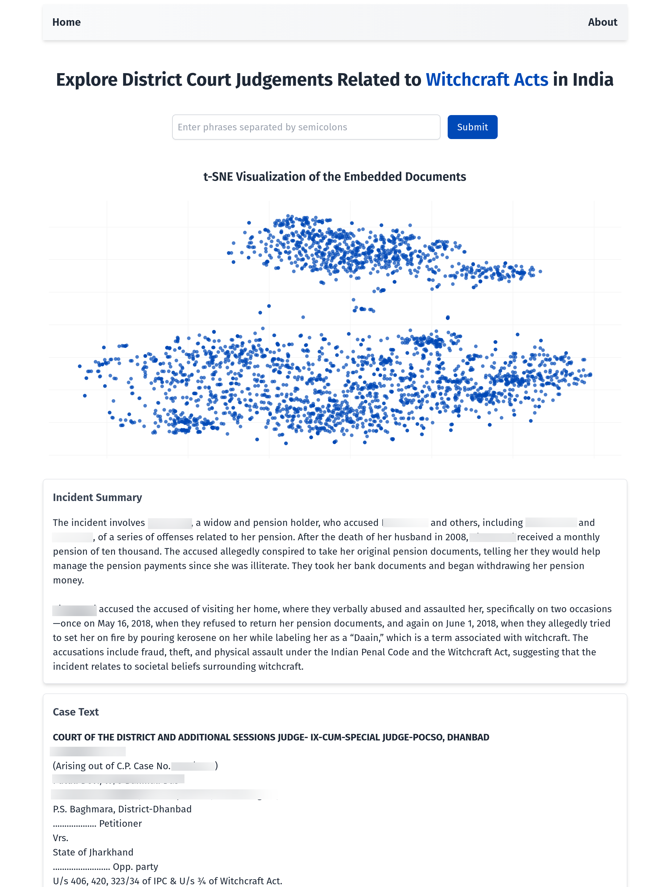

Application interface (personal information redacted)
Access Information
This application contains personally identifiable information from court records and is not currently available. If you are interested in accessing this for research or educational purposes, please contact me at sandeepbhupatiraju [at] gmail [dot] com. Please include institutional affiliation when present.